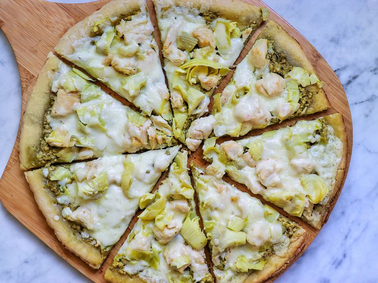

Chicken Pesto Pizze

Description
Think homemade pizza can't be simple? This version leans into store-bought crusts, precooked chicken strips, and a jar of pesto for a take on pizza that, dare we say, brings a bit of elegance to a toss-together dish.
Ingredients
- 1/2 cup pesto basil sauce
- 1 (12 inch) pre-baked pizza crust
- 2 cups cooked chicken breast strips
- 1 (6 ounce) jar artichoke hearts (Drained)
- cup shredded fontina cheese
Steps
- Preheat the oven to 450 degrees F (230 degrees C).
- Spread pesto sauce over the pizza crust. Arrange chicken pieces and artichoke hearts over the sauce, and sprinkle with cheese.
- Bake for 8 to 10 minutes in the preheated oven, until cheese is melted and lightly browned at the edges.